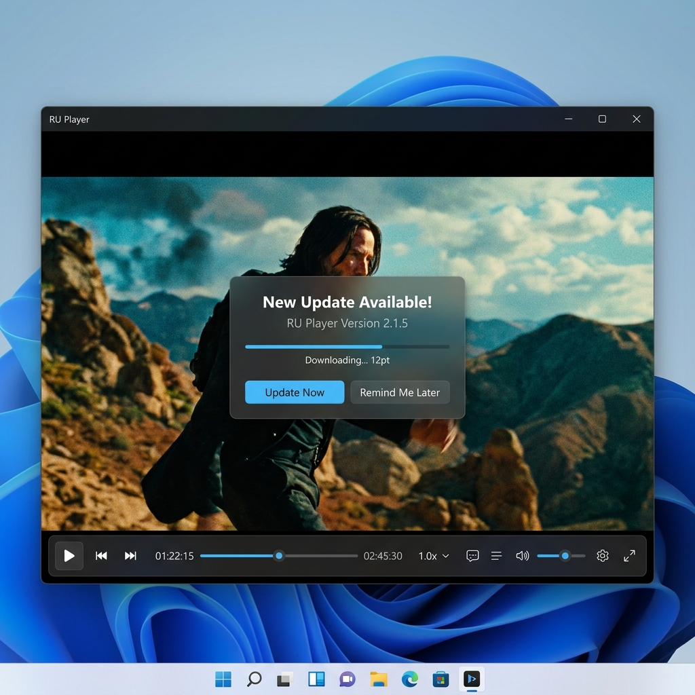

RU Player is a premium, hardware-accelerated media player designed for Windows. Plays all formats—from 4K Ultra HD videos to high-fidelity audio tracks—with a gorgeous dark mode interface.

Discover a player that blends advanced media decoding with intuitive UI customizability.
Decodes high-bitrate 4K videos smoothly using your CPU & GPU resources (DXVA/D3D11VA), reducing frame drops and system lag.
Seamless support for both video and audio. Playing audio files opens a premium dark layout showing album/music info with direct controls.
Right-click anywhere on the media to select multiple audio tracks, subtitle feeds, adjust aspect ratios, or tweak speed in real-time.
Features an built-in asynchronous updater. When updates are published, the app shows a borderless popup overlay to download and install silently.
Durable file association system that lets you double-click any `.mp4`, `.mkv`, or `.mp3` file to launch RU Player instantly as your default player.
Fine-tune video quality using built-in filters. Real-time adjust sliders are available to configure contrast, brightness, saturation, and hue.
Interactive features react to your media type instantly. Toggle the buttons below to preview how the user interface adjusts itself.
Plays 4K Ultra HD files smoothly using native VLC hardware rendering. Custom right-click options allow selecting subtitles, tracks, and adjusting ratios.
Hides the black screen completely, replacing it with an active media details grid, keeping controls accessible while providing clean visual feedback.
Launches a borderless modal updater that completely bypasses Windows airspace click interception issues. User can cancel, download, and install silently.
Start experiencing modern, distraction-free media playback on Windows. It is completely free, open-source, and does not require complex setup configurations.